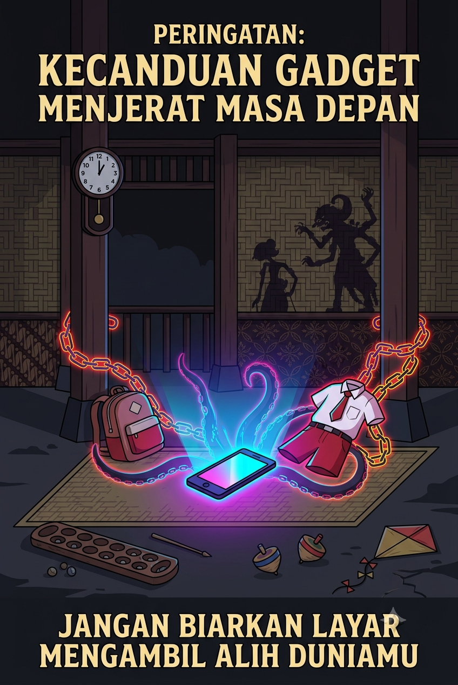

Serat Wedharaga:
Kendalikan Diri di Era Digital
Ajaran Ranggawarsita untuk Gen Z dan Alpha

Alasan Dibuat
Mengapa platform ini hadir dan apa tujuannya.
Serat Wedharaga adalah karya sastra Jawa yang ditulis oleh Raden Ngabehi Ranggawarsita pada abad ke-19. Terdiri dari 38 bait dalam bentuk tembang macapat gambuh, serat ini mengajarkan tentang pengendalian diri, kejujuran, dan kewaspadaan terhadap hawa nafsu.
Di era digital saat ini, banyak orang — terutama generasi muda — merasa kesulitan mengatur waktu dan emosi akibat paparan gadget yang berlebihan. Data menunjukkan bahwa 33–39% siswa SMA mengalami kecanduan game dan sulit membatasi penggunaan ponsel. Hal ini berdampak pada kesehatan fisik, mental, dan prestasi belajar.
Platform ini dibuat sebagai jembatan antara kearifan lokal dan tantangan modern. Kami ingin mengajak generasi muda untuk mengenal ajaran Ranggawarsita yang relevan hingga saat ini, terutama nilai self-regulation (pengaturan diri) yang mencakup kejujuran, toleransi, kewaspadaan, dan menolak fitnah.
Dengan pendekatan yang ringan dan interaktif, kami berharap pengguna dapat merenungkan kebiasaan digital mereka, menemukan keseimbangan, dan menjalani hidup yang lebih sadar. Serat Wedharaga bukan sekadar teks kuno, tetapi panduan hidup yang tetap terasa segar dan membumi.
~ Serat Wedharaga
Q&A
Tanya jawab singkat seputar Serat Wedharaga.
Galeri Serat Wedharaga
Visualisasi naskah Serat Wedharaga.
Ilustrasi Naskah


Siap Uji Pemahamanmu?
3 skenario interaktif berbasis ajaran Serat Wedharaga. Klik tombol di bawah.
Mainkan Game* Halaman game terpisah. 3 skenario sebab-akibat.